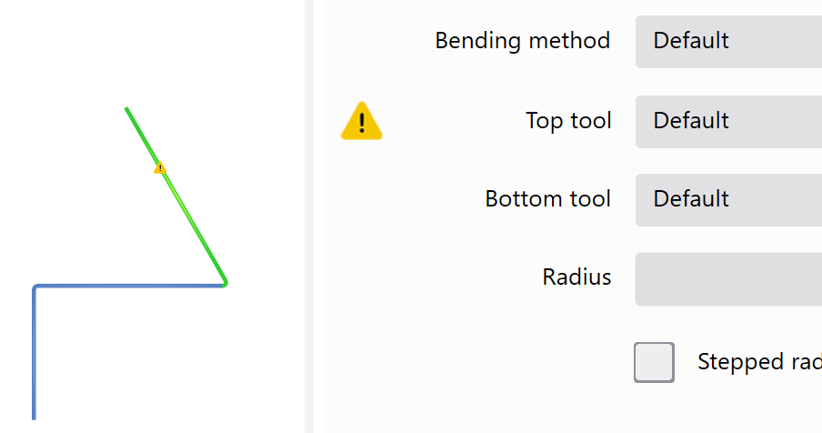

V editoru profilu mohou být sestaveny profily, které sestávají alespoň ze dvou ramen.
Po kliknutí na hlavní obrazovku se zobrazí úhlová stupnice. Dodatečně se v levém horním rohu zobrazí nadřazené okno s uvedením vnitřního úhlu a délky aktivního ramena.
Na pravé straně jsou k dispozici následující panely s náhledy.
| Symbol | Význam |
|---|---|
| Funkce zvětšování | |

|
Poloha |
| Zpracovat |
Řádek záhlaví
V řádku záhlaví jsou zobrazeny nejdůležitější funkce a nabídky. Záhlaví se zobrazuje ve všech náhledech.
Následující tlačítka s podfunkcemi jsou rozevírací.
 Programy a funkce
Programy a funkce
V této nabídce mohou být spuštěny programy a realizována následující nastavení.
| Symbol | Význam |
|---|---|

|
Spustí nebo přejde k programu BySoft Cell Control Bend |

|
Spustí program Správce |

|
Spustí dialog Nastavení (See «Nastavení») |
 Pomocné funkce
Pomocné funkce
V této nabídce se nacházejí všechny funkce pro informace k programu.
| Symbol | Význam |
|---|---|

|
Spustí dialog pro video tutoriály |

|
Spustí online nápovědu jako samostatnou aplikaci |

|
Otevře dialog pro podrobnou indikaci verze |
Profily mohou být vytvořeny geometricky nebo prostřednictvím tabulkového zadání.
Tip: Výběrem tlačítka Vlastnosti mohou být v registru Ohyby dodatečně změněny úhel a délka ramena.
Geometricky
Zadání se provádí kliknutím na úhlovou stupnici.
- Vybrat tlačítko. Zobrazí se úhlová stupnice.
- Tažením se definuje délka a úhel prvního ramena Úhlová stupnice se vždy posune na koncový bod ramena.
- Opětovným tažením v určitém úhlu se druhé rameno zavěsí na konec prvního.
- Hotový profil s funkcí Uložit uložit pod novým názvem.
- Funkcí Exportovat bude dílec automaticky načten do programu BySoft Cell Control Bend ke zpracování.
Tabulka
Zadání se provádí střídavým zadáváním délky ramena a úhlu prostřednictvím funkce Tabulka.
- V panelu funkcí vybrat tlačítko Tabulka.
-
 Vybrat tlačítko.
Vybrat tlačítko. - V zadávacím dialogu zadat délku prvního ramena a potvrdit tlačítkem OK.
- V zadávacím dialogu zadat úhel pro druhé rameno a potvrdit tlačítkem OK.
- V zadávacím dialogu zadat délku pro druhé rameno a potvrdit tlačítkem OK.
- Zopakovat kroky 4 až 5, až budou vytvořena všechna ramena.
- Hotový profil s funkcí Uložit uložit pod novým názvem.
- Funkcí Exportovat bude dílec automaticky načten do programu BySoft Cell Control Bend ke zpracování.
Bude-li u stávajícího dílu změněna jen délka ohybu, může být převzata stávající technologie.
NOTE: U změny délky ohybu musí být v programu ByVision Cutting v nabídce Technologie aktualizován plán seřizování a dodatečně upraveny osy dorazů.
Předpoklad:
- Počet řezů musí souhlasit.
- U každého kroku musí souhlasit počet ploch.
- Počet čar ohybu musí souhlasit.
- U každé čáry ohybu musí souhlasit BendID, úhel ohybu, zkrácení a vnitřní poloměr ohybu.
- Délky ramen nesmí být změněny. Ale musí být dodatečně zkontrolováno pořadí ohýbání.
Pokud byl vložen pomocný ohyb, nemůže být technologie již spojena. Vložení předohybu nemá vliv, a proto je přípustný.
Nemůže být vymazáno nebo vloženo rameno.
Ovlivňující parametry procesu ohýbání nesmí být změněny.

Nejsou-li na výkresech důsledně uvedeny vnější rozměry, může být délka ramena zvýšena o přírůstek tloušťky plechu.
K tomu účelu vybrat text Délka. Zobrazí se Popup (A), se kterým může být upravena délka ramena o tloušťku plechu směrem nahoru nebo dolů.

Během zadávání nového profilu se zkontroluje používání zvolených nástrojů. Jsou kontrolovány následující vlastnosti:
- Povolení stlačení naplocho
- Metoda ohýbání Jako metoda ohýbání se označuje 3bodové ohýbání, volné ohýbání a ražení. (např. ražením)
- křižující rameno
- minimální délka ramena
Jestliže je naprogramován ohyb naplocho a horní anebo spodní nástroj nemá povolení k ohybu naplocho, zobrazí se vyrování. Automaticky se zobrazí registr Ohýbání v dialogu Vlastnosti.
Varování se vždy zobrazí u nástroje, ačkoli musí být také eventulně změněna metoda ohýbání. Varování zmizí až po odstranění konfliktu.